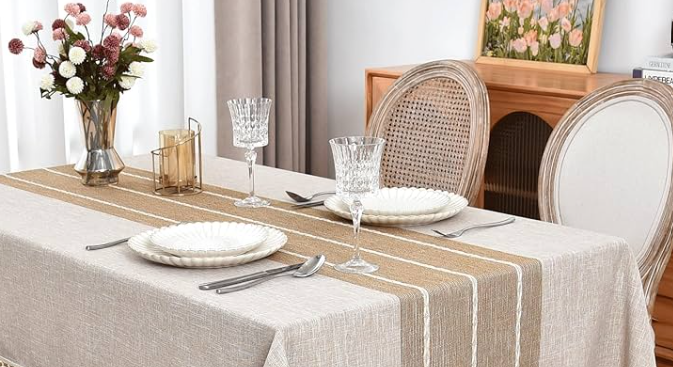

Collections
The Signature
Craftsman Edit

Bedding Ranges
Bedding Collections
Experience unparalleled comfort with our meticulously crafted bedding. Featuring a diverse range of premium weaves and certified organic materials, every piece undergoes rigorous quality inspections to ensure lasting luxury, ethical excellence, and the perfect night's sleep.
View Collection →
Furnishings
Table Linens
Beyond mere fabric lies our master-woven organic collection. Every piece is a tactile masterpiece, sculpted through centuries-old techniques and refined by relentless quality benchmarks. This is not just linen; it is an enduring legacy of grace for the world's most distinguished tables.
View Collection →
Decorative Made-ups
Cushions & Throws
Surrender to the sublime softness of our organic cushions and throws. Each piece is a masterclass in textile artistry, featuring specialized weaves and meticulous hand-finishing. Vetted through rigorous quality benchmarks, they offer an unparalleled drape and a sanctuary of pure, sustainable elegance. View Collection →

Floor Furnishings
Rugs & Carpets
Indulge in artisanal luxury with rugs that serve as floor-bound masterpieces. From the velvety depths of hand-tufted wool to the iridescent shimmer of heritage silk, these textiles anchor rooms in rich texture. Experience a symphony of pigment and intricate patterns that transform living spaces into tactile, high-definition sanctuaries.
View Collection →Soft Furnishings
Bath Linens
Our bath collection is curated for those who value substance and style. By combining certified organic materials with stringent artisanal checks, we deliver high-performance linens that maintain their lustrous feel and structural integrity, wash after wash.
View Collection →Custom Bespoke
Signature Series
Your space should reflect your style, and sometimes that means going off-menu. We’re happy to adapt our organic materials to your specific needs. Just let us know what you're looking for, and we’ll apply our artisanal checks to your custom creation.
View Collection →The Craft
Mastery born from
ten thousand hours
Each piece leaves our facility only after passing through many stages of hand-inspection. Our master weavers — many trained through three generations of family craft — spend up to forty hours on a single produce. Quality here is not a checklist. It is the philosophy that drives Toyota Weavers.
Learn MoreMaterials & Process
What goes into
every thread
We source only certified-origin natural fibres — tracing every bolt back to its field, its farmer, and its harvest season.
Supima Cotton
Supima cotton is an extra-long staple cotton grown in the United States, known for premium quality. We choose it for strength, softness, and color retention. It feels exceptionally smooth and luxurious with a refined finish. Perfect for high-end bedding, sheets, towels, and apparel textiles
European Linen
European flax linen is derived from sustainably grown flax in Western Europe. We choose it for durability, eco-friendliness, and breathability. It feels crisp yet softens over time, with a natural textured look. Commonly used for table linens, bedding, curtains, upholstery, and summer textiles.
Jacquard Weaving
Jacquard weaving uses advanced looms to interlace yarns into intricate patterns directly within the fabric. We choose it for precision, durability, and design versatility. It feels rich, textured, and structured with refined detailing. Ideal for upholstery, curtains, bedding, and statement cushion covers.
Natural Pigment Dyeing
Natural dyeing uses plant-based, mineral, and botanical extracts to color textiles without harmful chemicals. We choose it for its low environmental impact, skin safety, and timeless aesthetic. It feels soft with earthy, nuanced tones and slight variations. Supported by certifications like GOTS and OEKO-TEX, it is ideal for bedding, table linens, apparel, and conscious home textiles.
Our Culture
India’s heritage textiles are traditional fabrics developed through generations of regional craftsmanship. We choose them for their cultural richness and artisanal authenticity. Examples include Banarasi, Bhagalpuri, Kantha, Bandhani. They feature intricate patterns, rich textures, and handcrafted character, widely used in home textiles, apparel, and decorative applications
Hand Embroidery
Embroidery transforms fabric into art through intricate stitching techniques passed down generations. We choose it for its unmatched ability to elevate textiles with depth and character. It feels richly textured, visually striking, and exquisitely detailed. From delicate threadwork to bold statement motifs, it brings a luxurious, handcrafted essence to cushions, bedspreads, drapery, and statement décor pieces.
Trusted by -
Get in Touch
Begin a
conversation
Whether you are an interior designer specifying for a project, a hotelier looking to re-align an entire property, or a homeowner after a single exceptional piece — we respond to every enquiry within 24 hours.